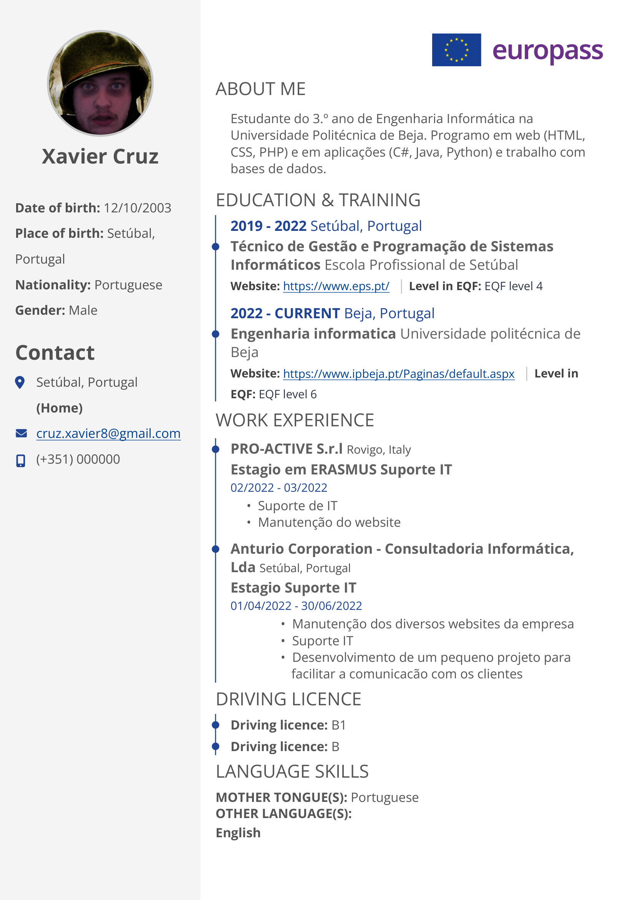

Engenharia Informática
Universidade Politécnica de Beja, Escola Superior de Tecnologia e Gestão
A fazer a licenciatura
Engenharia Informática · 3.º ano · UPBeja
Estudante de Engenharia Informática.
Trabalho com web e programação de aplicações, bases de dados e Linux, e tenho experiência a gerir servidores públicos e um homelab próprio.

Sou o Xavier, estudante do 3.º ano de Engenharia Informática na UPBeja. Interessam-me as bases de dados, as redes, a virtualização e os sistemas Linux, tudo o que fica entre o código e a máquina onde ele corre.
Fora das aulas, trabalhei com a API Bukkit, Paper e Spigot, giri um servidor público de Minecraft e montei um homelab em Ubuntu com VPN, DNS e DHCP próprios.
Universidade Politécnica de Beja, Escola Superior de Tecnologia e Gestão
A fazer a licenciatura
Escola Profissional de Setúbal
Ensino Secundário Profissional

Dono, administrador e maintainer de um pequeno servidor público.
Servidores Linux, sobretudo Ubuntu, que mantenho para aprender e para uso próprio.
N/A

O CV reúne formação, competências técnicas, experiência e projetos, competências transversais e línguas.
Contactos profissionais